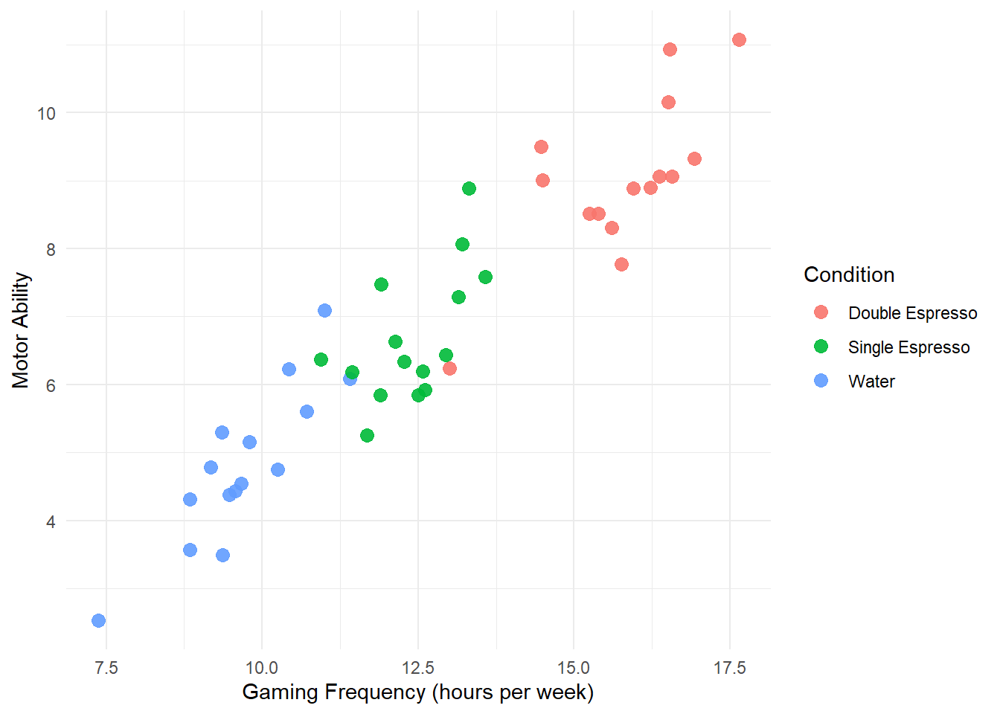
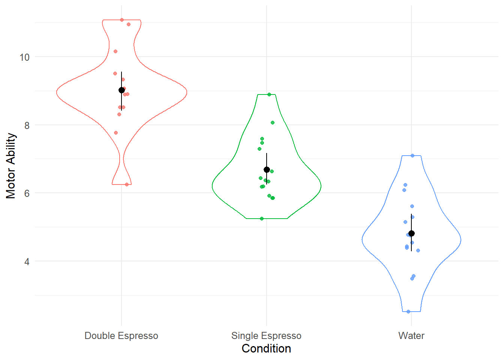
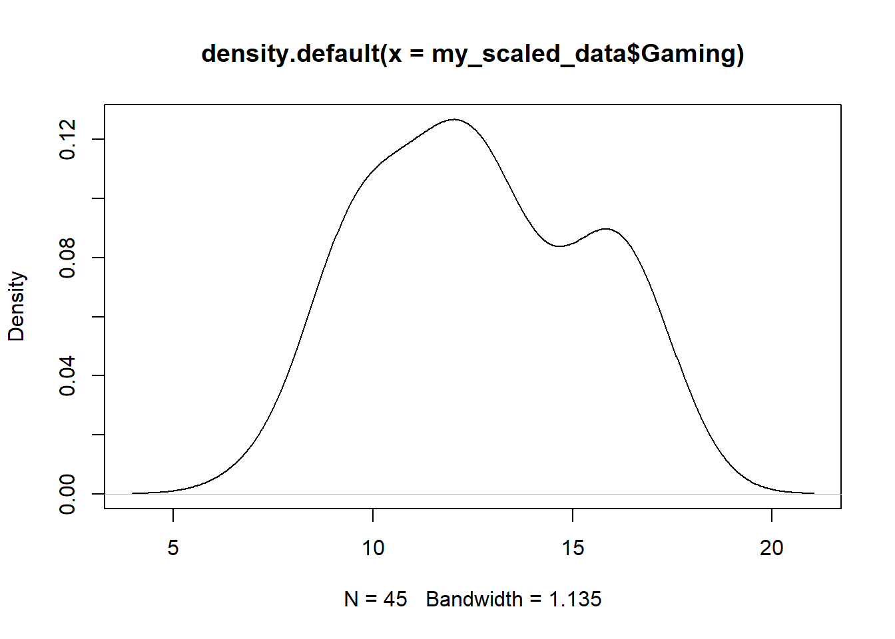
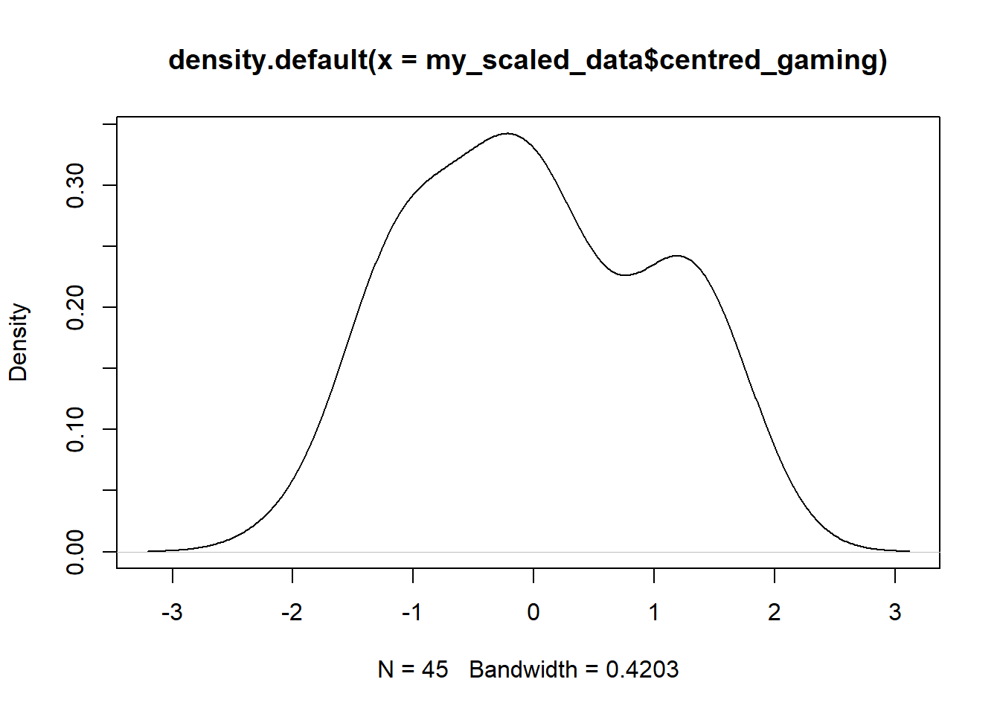

Chapter 9 一般线性模型 - 方差分析第 2 部分
在本次研讨会中，我们将在上一节的基础上探索协方差分析 (ANCOVA)。 在本次研讨会中，我们还将研究方差分析和方差分析作为回归的特殊情况，并了解如何通过线性模型构建这两者。 当你自己这样做时，你将有望确信方差分析和回归实际上是同一件事。
建立我们的ANCOVA
加载我们的包
让我们看一下我在上面视频中介绍的 ANCOVA 示例。 首先我们需要加载我们需要的包。 我们将使用tidyverse进行一般数据整理和数据可视化，然后使用afex包来构建我们的 ANCOVA 模型，并使用emmeans包来运行成对比较并显示我们的调整后的平均值。
读取我们的数据
现在我们要读入我们的数据。数据可以在这里下载
## # A tibble: 6 × 4
## Participant Condition Ability Gaming
## <dbl> <chr> <dbl> <dbl>
## 1 1 Water 3.49 9.37
## 2 2 Water 5.61 10.7
## 3 3 Water 5.29 9.35
## 4 4 Water 4.75 10.2
## 5 5 Water 4.44 9.57
## 6 6 Water 2.53 7.37我们发现条件（Condition）没有正确编码为一个因素，所以让我们解决这个问题。
## # A tibble: 6 × 4
## Participant Condition Ability Gaming
## <dbl> <fct> <dbl> <dbl>
## 1 1 Water 3.49 9.37
## 2 2 Water 5.61 10.7
## 3 3 Water 5.29 9.35
## 4 4 Water 4.75 10.2
## 5 5 Water 4.44 9.57
## 6 6 Water 2.53 7.37总结我们的数据
接下来让我们进行一些汇总统计并构建数据可视化。
## # A tibble: 3 × 2
## Condition mean_ability
## <fct> <dbl>
## 1 Double Espresso 9.02
## 2 Single Espresso 6.69
## 3 Water 4.82可视化我们的数据
set.seed(1234)
ggplot(my_data, aes(x = Gaming, y = Ability, colour = Condition)) +
geom_point(size = 3, alpha = .9) +
labs(x = "Gaming Frequency (hours per week)",
y = "Motor Ability") +
theme_minimal() +
theme(text = element_text(size = 11)) 
我们构建了一个可视化，使用geom_point()函数绘制了原始数据点。
建立我们的方差分析模型
让我们首先构建一个方差分析模型，并忽略数据集中协变量的存在。
## Contrasts set to contr.sum for the following variables: Condition## Anova Table (Type 3 tests)
##
## Response: Ability
## num Df den Df MSE F ges Pr(>F)
## Condition 2 42 1.2422 53.432 0.71786 2.882e-12 ***
## ---
## Signif. codes: 0 '***' 0.001 '**' 0.01 '*' 0.05 '.' 0.1 ' ' 1根据此输出，我们似乎具有条件效果。 为了进一步探讨这一点，我们将使用emmeans()函数来运行成对比较。
在此基础上，我们可能会得出这样的结论：我们受到条件的影响，并且我们的三组中的每一组都与其他组有显着差异。 但这是对的吗？ 不，因为我们没有考虑协变量。
我们将构建我们的 ANCOVA 模型，在我们的实验条件操作之前添加我们的协变量。 我们将factorize参数设置为FALSE ，以便将其视为连续预测变量，而不是模型中的实验因子。
model_ancova <- aov_4(Ability ~ Gaming + Condition + (1 | Participant), data = my_data, factorize = FALSE)## Warning: Numerical variables NOT centered on 0 (i.e., likely
## bogus results): Gaming## Contrasts set to contr.sum for the following variables: Condition## Anova Table (Type 3 tests)
##
## Response: Ability
## num Df den Df MSE F ges Pr(>F)
## Gaming 1 41 0.55171 53.5636 0.56643 5.87e-09 ***
## Condition 2 41 0.55171 0.8771 0.04103 0.4236
## ---
## Signif. codes: 0 '***' 0.001 '**' 0.01 '*' 0.05 '.' 0.1 ' ' 1在此输出的基础上，我们看到我们不再具有条件的影响，但确实具有协变量的影响。
我们可以使用emmeans()函数来生成调整后的均值（即，考虑到协变量的影响，三组中每组的均值）。
## $emmeans
## Condition emmean SE df lower.CL upper.CL
## Double Espresso 6.32 0.415 41 5.48 7.16
## Single Espresso 6.87 0.193 41 6.48 7.26
## Water 7.33 0.393 41 6.53 8.12
##
## Confidence level used: 0.95
##
## $contrasts
## contrast estimate SE df t.ratio
## Double Espresso - Single Espresso -0.552 0.478 41 -1.155
## Double Espresso - Water -1.008 0.761 41 -1.324
## Single Espresso - Water -0.456 0.418 41 -1.092
## p.value
## 0.4863
## 0.3900
## 0.5244
##
## P value adjustment: tukey method for comparing a family of 3 estimatesAN(C)OVA 作为回归的特例
我们现在将ANOVA（然后是AN(C)OVA）视为回归的一个特例。
可视化我们的数据
让我们用 x 轴上的条件(condition)来可视化数据。
my_data %>%
ggplot(aes(x = Condition, y = Ability, colour = Condition)) +
geom_violin() +
geom_jitter(width = .05, alpha = .8) +
labs(x = "Condition",
y = "Motor Ability") +
stat_summary(fun.data = mean_cl_boot, colour = "black") +
guides(colour = FALSE) +
theme_minimal() +
theme(text = element_text(size = 12)) 
让我们检查一下我们的条件因子当前是如何根据其对比进行编码的。 请注意，表达式my_data$Condition是引用数据集my_data中名为Condition的变量的 Base R 方式。
设置我们的对比
## Single Espresso Water
## Double Espresso 0 0
## Single Espresso 1 0
## Water 0 1我们希望我们的水组成为参考水平（因此对应于我们的线性模型的截距），并且虚拟编码为（0, 0），但目前还没有这样编码。 让我们解决这个问题。
my_data <- my_data %>%
mutate(Condition = fct_relevel(Condition,
c("Water", "Double Espresso", "Single Espresso")))
contrasts(my_data$Condition)## Double Espresso Single Espresso
## Water 0 0
## Double Espresso 1 0
## Single Espresso 0 1方差分析作为线性模型
好的，这就是我们现在想要的。 让我们使用lm()函数对线性模型进行建模并检查结果。
##
## Call:
## lm(formula = Ability ~ Condition, data = my_data)
##
## Coefficients:
## (Intercept) ConditionDouble Espresso
## 4.817 4.199
## ConditionSingle Espresso
## 1.871我们可以看到截距对应于我们的水状况的平均值。 为了计算出 Double Espresso 组的平均能力，我们使用 Double Espresso 组的编码 (1, 0) 和我们的方程：
Ability = Intercept + β1(Double Espresso) + β2(Single Espresso)
Ability = 4.817 + 4.199(1) + 1.871(0)
Ability = 4.817 + 4.199
Ability = 9.016
为了计算单份浓缩咖啡组的平均能力，我们使用单份浓缩咖啡组的编码 (0, 1) 和我们的方程：
Ability = 4.817 + 4.199(0) + 1.871(1)
Ability = 4.817 + 1.871
Ability = 6.688
ANCOVA 作为线性模型
好的，现在要使用lm()函数构建我们的 ANCOVA，我们只需将协变量 ( Gaming ) 添加到我们的模型规范中。
##
## Call:
## lm(formula = Ability ~ Gaming + Condition, data = my_data)
##
## Coefficients:
## (Intercept) Gaming
## -3.4498 0.8538
## ConditionDouble Espresso ConditionSingle Espresso
## -1.0085 -0.4563我们可以通过将值代入方程来计算出参考组（Water）的平均值 - 请注意，游戏（Gaming）不是一个因素，我们需要输入该变量的平均值。
我们可以通过以下方法来解决。
## [1] 12.62296我们将此平均值 (12.62296) 与每个预测变量的系数一起添加到我们的方程中。 通过我们的虚拟编码方案，我们可以计算出水组的调整后平均值。
Ability = Intercept + β1(Gaming) + β2(Double Espresso) + β3(Single Espresso)
Ability = -3.4498 + 0.8538(12.62296) + (- 1.0085)(0) + (-0.4563)(0)
Ability = -3.4498 + 10.777
Ability = 7.33
7.33 是水组的调整平均值，这是我们通过调用 ANCOVA 后的emmeans()函数得到的值。 尝试使用我们的虚拟编码来计算其他两个条件的调整方法。
以协变量为中心(Centering our Covariate)
在视频中，我提到我们还可以缩放协变量并将其居中。 这使变量标准化（均值以零为中心），并且无需将协变量的线性模型系数乘以协变量的均值。 一般来说，它使我们的线性模型中的系数的解释变得更容易。
我们可以使用scale()函数在数据框中创建协变量的新（缩放和居中）版本。
我们可以查看非中心协变量和中心协变量，发现数据中没有任何变化，除了变量均值现在以零为中心并且分布已按比例缩放之外。


model_ancova_centred <- lm(Ability ~ centred_gaming + Condition, data = my_scaled_data)
model_ancova_centred##
## Call:
## lm(formula = Ability ~ centred_gaming + Condition, data = my_scaled_data)
##
## Coefficients:
## (Intercept) centred_gaming
## 7.3280 2.3046
## ConditionDouble Espresso ConditionSingle Espresso
## -1.0085 -0.4563我们看到截距现在对应于水组的调整后平均值。 我们可以通过从 7.3280 减去 1.0085 来计算 Double Espresso 组的调整平均值，并且可以通过从 7.3280 减去 0.4563 来计算 Single Espresso 组的调整平均值。 希望您看到协变量的缩放和居中使得解释我们的线性模型的系数变得容易得多。